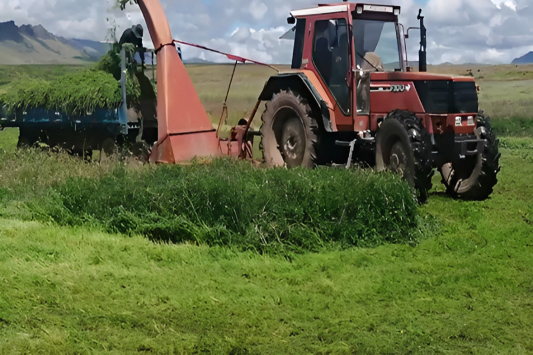

Ganadería
- Vacas: leche y queso.
- Ovinos: lana y carne.
- El forraje (avena y alfalfa) las alimenta todo el año.

En mi zona el trabajo del campo marca el ritmo del año. Estos son los cultivos principales y cuándo se siembran y se cosechan.

| Cultivo | Siembra | Cosecha | Uso principal |
|---|---|---|---|
| Papa | Setiembre a noviembre | Abril a junio | Alimento de la familia y venta |
| Quinua | Octubre a noviembre | Abril a mayo | Alimento y venta |
| Avena | Noviembre a diciembre | Abril a mayo | Forraje para el ganado |
| Alfalfa | 4ta semana de Diciembre a enero | Febrero a marzo dependiendo a temporada de lluvia | Alimento de vacas y ovinos |
| Las fechas cambian según la lluvia y la altura de cada chacra. | |||